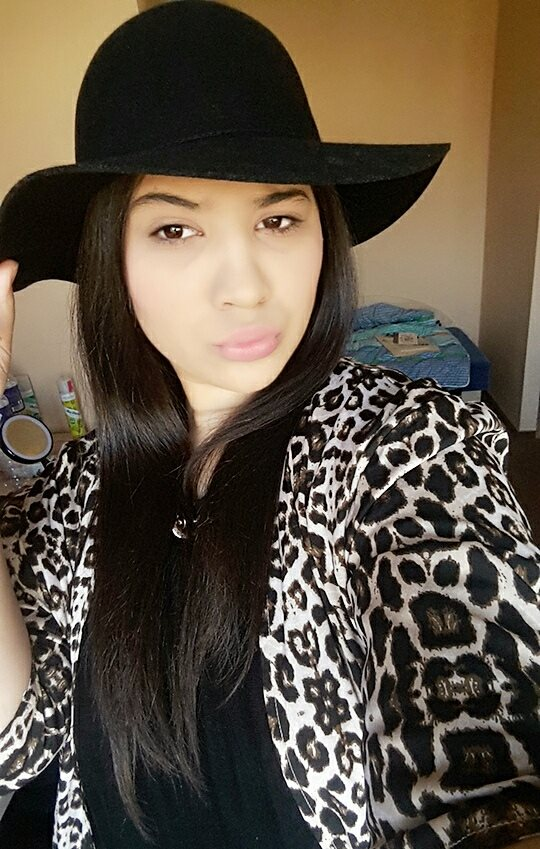
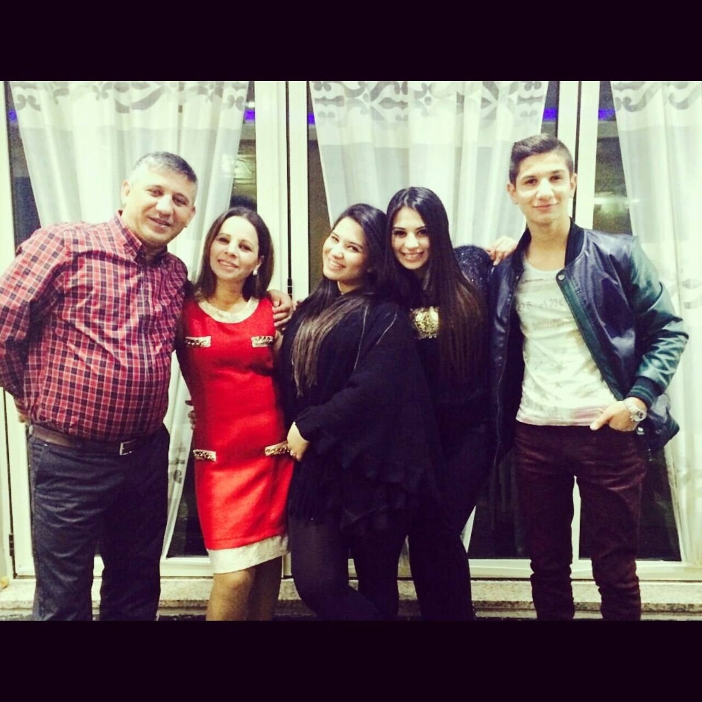
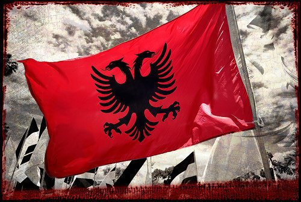
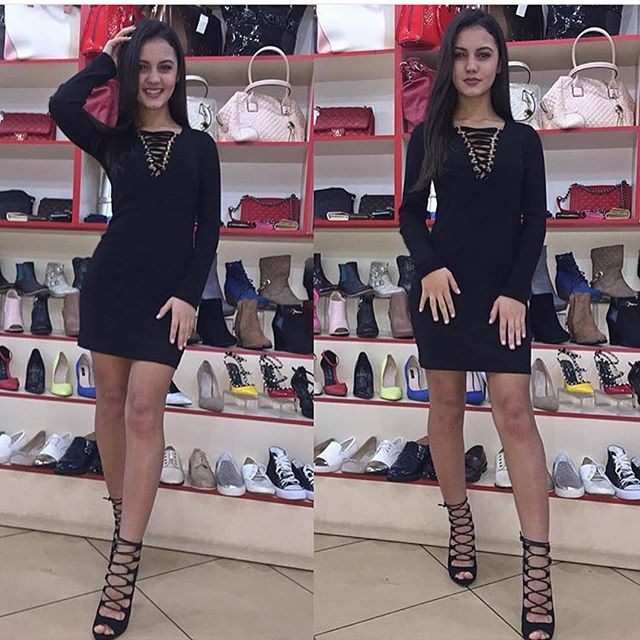
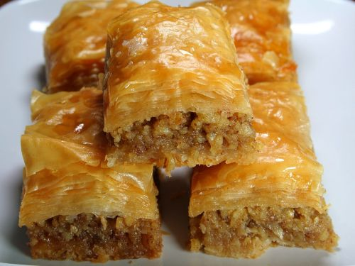
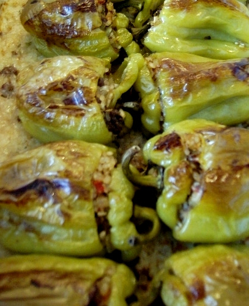

HOME| ABOUT ME|FASHION| FOOD| PROJECTS| CONTACT
ABOUT ME
 Hello! My name is Romina. I have been born and raised in Northern Albania,but recently I am studying in Lithuania, in LCC University for Communication. I live with my family and I love them to the moon and back. I love fashion, music, make-up, cooking and taking photo. My life moto is: If you believe in yourself, you can achieve everything!" "INSPIRED BY ROMINA" is a daily lifestyle blog covering fashion, makeup-tutorials, recipies, personal projects ect. Every ay is a apportiunity to explore life and its bauty; Let's explore it together! PS: I am very proud of being Albanian, and we have the most beautiful flag in the world.
FASHION
Albania is well known for being sincronic with world fashion model. Young people use to follow the modern trends taken from the last magazines. Me, as well, I am very concern about everything related to fashion. I like vintage style, long and short evening dresses and evening hats. I have been models' consuelor in a very famous boutique in my city. I have also participated in many fashion's events like "Miss nd Mister Of Albania" where I worked s a consuelor nd make-up designer.

FOOD
Albanian food is so delicious. All foreigner love our "byrek" or "japrak". We are part of many worlds'conviviums like "slow food" or " food management" and we are so proud of that. Sometimes many countries make a mstake when they say we have the same food as greeks because actually it is so different.
 PROJECTS
Terra Madre Slow Food Kripmjaltezat In the first one I have helped a lot in maintaining a stable value of all marketing reserches. Also have been responsible for the whole controlling process during the project. out the second, I have opened the firt course in my city to help young girls learn how to cook And the third one has helped me a lot move out of my confortzone and find myself.
CONTACT